Key to keys and key tips
If your unknown disseminule is a seed or fruit, use this Key to Keys to determine which of the three angiosperm family keys — Poaceae, Fabaceae, or Other Families — to use for taxon identification. You can also find tips for using each key at the bottom of each section.
-
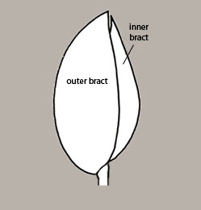
Side view of bracted disseminule showing one outer bract edge.
-
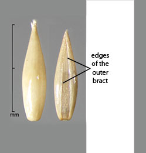
Front and back views of a bracted disseminule showing outer bract .
-
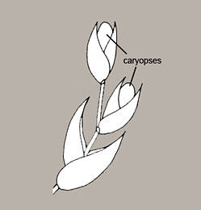
Branched grass disseminule.
You should use the Poaceae key if
The disseminule is a fruit (called a caryopsis) sheathed by 2+ bracts occurring at alternating vertical positions along the floral axis and opposing each other as they sheath the caryopsis. Bract sheathing is evidenced by the occurrence of the (1 or 2) longitudinal edge(s) of the outermost bract. The grass disseminule is sometimes "branched" and these single or multiple branches may be subtended by accessory structures such as a whorl of hairs or bristles.
Side view of bracted disseminule showing one outer bract edge.
OR
The bracts have been shed, leaving a caryopsis which is recognized by having an embryo discernible on one side of the fruit extending up from the fruit's base and by having a hilar region visible on the opposite side of the fruit, again extending up from the fruit's base.
-
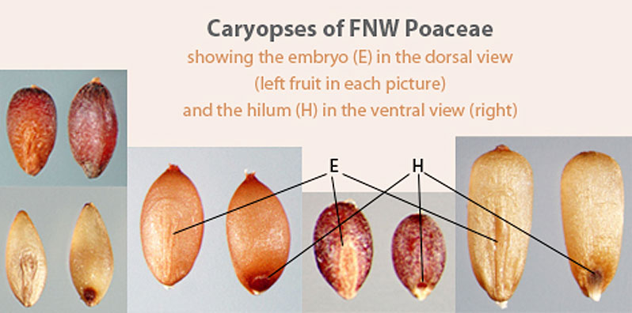
FNW caryopses labeled with the positions of the embryo and hilum.
-
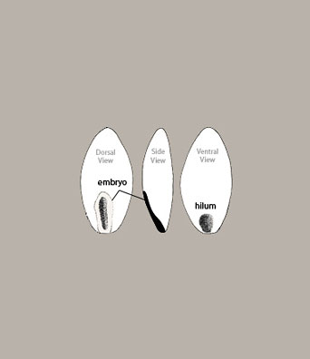
Views of the grass caryopsis.
If you have not yet visited it, go to the Poaceae disseminule types section for a better understanding of this family's morphology and terminology.
Go to the Poaceae KeyTips for using the Poaceae key
Since identifying a spikelet can be difficult, identification of its subtending glumes is even more challenging. Glumes are also subject to loss during rough handling. Consequently, this key has been constructed so that spikelet and glume characters are considered Advanced Characters. To use any of the other characters in the key, it is not necessary to know which bracts are glumes. And, while grass specialists may be most comfortable using Advanced Characters, it is not necessary to use these characters to achieve a reliable identification.
Where there are normally multiple disseminule types for a grass taxon, separate identification entities have been constructed in the key for caryopses, florets, and spikelets or clusters of spikelets as appropriate.
If you are sure that the disseminule you need to identify is a grass, go to the Poaceae key, keeping in mind that the entire FNW tool, including this key, is designed to help you to recognize disseminules that MAY represent a FNW taxon but not necessarily to make an exact species determination. Consequently, when the key results in one or a few possible entities, the user should go next to the fact sheets of those entities. The fact sheets provide a more detailed description of each FNW taxon as well as characters important for distinguishing an FNW taxon from a similar-looking non-FNW taxon. If your identification is uncertain, seek the advice of an expert.
For more instruction on how best to use the key to make an identification, see the Key Best Practices.
-
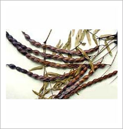
Typical-looking leguminous pods. These are of Prosopis ruscifolia.
-
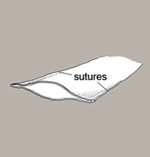
A transverse section of a compressed pod illustrating its pair of sutures.
-
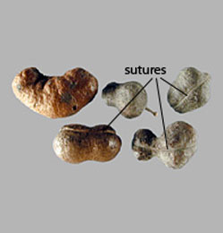
Even cylindrical legume pods have sutures.
You should use the Fabaceae key if
The disseminule is an intact leguminous pod (a dry, multi-seeded, typically elongated fruit, compressed or cylindrical, sometimes twisted or coiled, with two longitudinal sutures).
Typical vs. atypical types of FNW pods.
OR
The pod has broken up into one or more single-seeded segments.
-
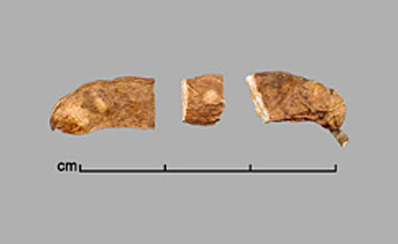
In the middle of this broken fruit is a single-seeded fragment.
-
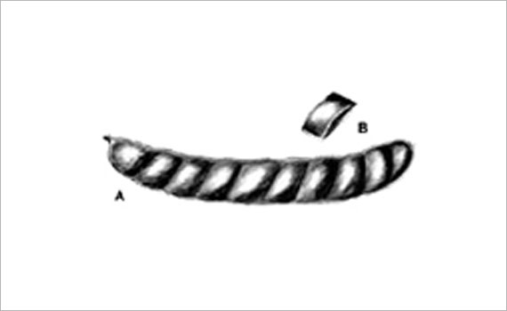
A, Pod; B, single-seeded fruit segment; portion of drawing by Lynda E. Chandler
OR
The disseminule is a compressed but relatively thick seed characterized by having a pleurogram (U- or O-shaped line) on both seed faces and/or a lens (a differentiated area somewhat larger than and occurring next to the hilum). Identification tip: without magnification the larger lens is often mistaken for the relatively inconspicuous hilum. To see that both are present in the same area, use at least 10X magnification.
-
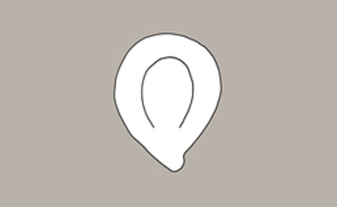
The upside-down U-shaped marking is the pleurogram.
-
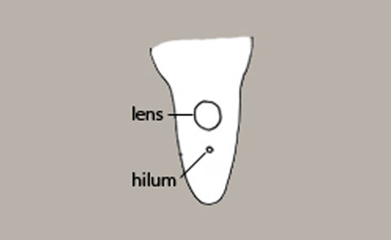
Base of seed showing the lens and hilum.
Typical types of FNW Fabaceae seeds, including the positions of the lens and hilum.
If you have not yet visited it, go to the Fabaceae Disseminule Types section for a better understanding of this family's morphology and terminology and for tips on using the Fabaceae key.
Go to the Fabaceae KeyTips for using the Fabaceae key
Disseminule types in the Fabaceae present in a range of forms, from intact fruit to naked seed. This is particularly true for species of Prosopis. For this reason, disseminule types are not listed individually on the Prosopis fact sheets. Also, in the Fabaceae key, the entity thumbnail consists of a compound image showing both the fruit and seed. Both fruit and seed characters are available for taxon identification upon starting the key.
If you are sure that the disseminule you need to identify is a Fabaceae, go to the Fabaceae key, keeping in mind that the entire FNW tool, including this key, is designed to help you to recognize disseminules that MAY represent a FNW taxon but not necessarily to make an exact species determination. Consequently, when the key results in one or a few possible entities, the user should go next to the fact sheets of those entities. The fact sheets provide a more detailed description of each FNW taxon as well as characters important for distinguishing an FNW taxon from a similar-looking non-FNW taxon. If your identification is uncertain, seek the advice of an expert.
For more instruction on how best to use the key to make an identification, see the Key Best Practices.
You should use the Other Families key if
The disseminule is not as described for Poaceae or Fabaceae. Bracts, if present, are arranged in whorls (i.e., each bract is not at a distinct vertical position along the floral axis.) Fruit or seed does not have a discernible embryo at the the base of one face of the disseminule and a discernible hilum at the base of the other face. No pleurogram is present on either seed face, nor is a lens found near the hilum. Intact dry fruits are not linear and multi-seeded.
-
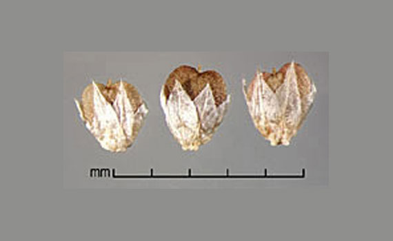
Alternanthera sessilis fruits with two whorls of bracts (in the form of papery tepals) still attached.
-
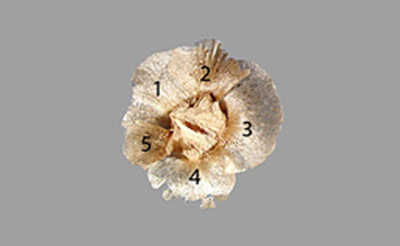
A view of the top of a fruit of Salsola vermiculata showing a whorl of 5 bracts which are the sepals of the flower
-
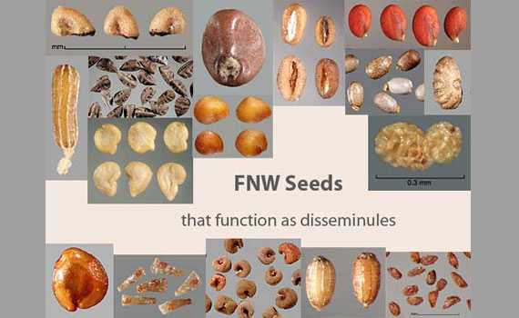
FNW seeds as disseminules
-
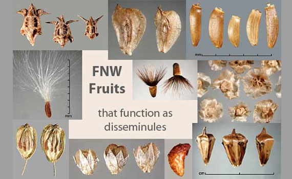
FNW fruits as disseminules
If you have not yet visited it, go to the Other Families Disseminule Types section for a better understanding of general seed and fruit morphology and terminology.
Go to the Other Families KeyTips for using the Other Families key
The Other Families key is one of three angiosperm family keys that can be used to identify an unknown fruit or seed disseminule. Because there are many FNW taxa in the Poaceae and Fabaceae families, and because these families present a range of disseminule types, these species are treated separately in the Poaceae and Fabaceae keys, respectively. Species of all other angiosperm families are treated in the Other Families Key.
Sexual reproductive disseminules come in many forms. Where multiple forms occur in a single taxon, which is rare for the taxa included in the Other Families key, the fact sheets will list these. More often, a disseminule from these families displays variation in appearance due to the breakage of accessory structures or the “rubbing off” of thin, dry pericarp tissues. For some species, there are pictures of damaged disseminules in the species’ images and verbage in the fact sheets describing how the appearance of a disseminule may be altered.
To effectively use the Other Families key, it is not necessary to know in the beginning whether the disseminule you are trying to identify is a fruit, a fruit fragment, or a seed. Most of the characters, such as shape, size, color, surface texture, or appendages, apply to the disseminule, whether it is a fruit or seed. However, there are a few characters that apply only to the achenes of the Asteraceae. These include pappus (the bristles or scales attached to the floral end of the fruit), whether or not there is a conspicuous stylar base on the floral end of the fruit, and the nature of the pedicel attachment scar, which occurs at the opposite end of the fruit.
If you are sure that the disseminule you need to identify is not a member of the Poaceae or Fabaceae, go to the Other Families Key, keeping in mind that the entire FNW tool, including this key, is designed to help you to recognize disseminules that MAY represent an FNW taxon but not necessarily to make an exact species determination. Consequently, when the key results in one or a few possible entities, the user should go next to the fact sheets of those entities. The fact sheets provide a more detailed description of each FNW taxon as well as characters important for distinguishing a FNW taxon from a similar-looking non-FNW taxon. If your identification is uncertain, seek the advice of an expert.
For more instruction on how best to use the key to make an identification, see the Key Best Practices.